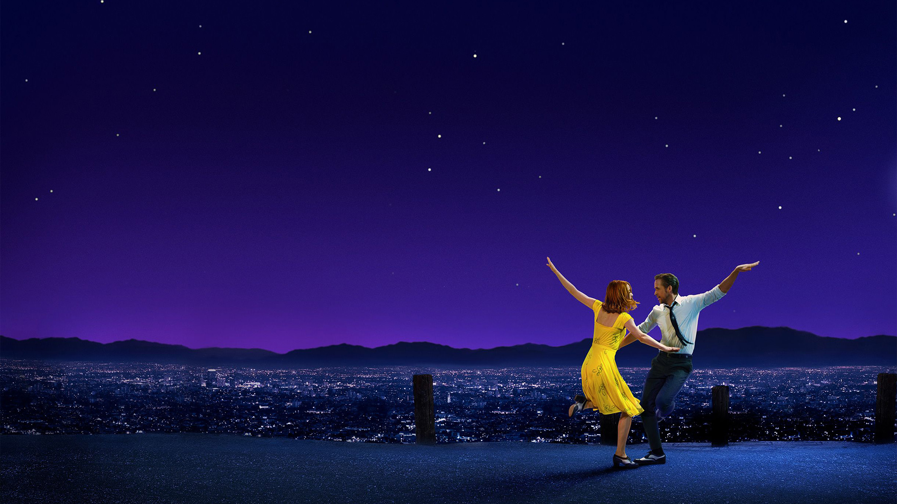

(2016)
Konusu
oyuncu hakkında bilgi için oyuncuya tıklayın.
Oyuncu olma hayali kuran Mia, seçmeler arasında film yıldızlarına latte servis ederken, caz müzisyeni Sebastian ise salaş barlarda kokteyl partilerinde çalarak geçimini sağlamaktadır. Ancak başarıları arttıkça, kırılgan aşk ilişkilerinin dokusunu yıpratmaya başlayan kararlarla karşı karşıya kalırlar ve birbirlerinde korumak için çok çalıştıkları hayaller onları birbirinden ayırmakla tehdit eder.
Damien Chazelle
Emily Jean "Emma" Stone (doğum tarihi 6 Kasım 1988), Amerikalı bir oyuncu ve yapımcıdır. İki Akademi Ödülü, iki BAFTA Ödülü ve iki Altın Küre Ödülü kazanmıştır. Kariyerine Phoenix'teki Valley Youth Theatre'da The Wind in the Willows (2000) ile başladı ve on beş yaşında Los Angeles'a taşınarak, satılmayan bir televizyon pilotu olan In Search of the New Partridge Family (2004) ile oyunculuk kariyerine adım attı. Stone, Superbad (2007), Zombieland (2009) ve ilk başrolü olan Easy A (2010) gibi gençlik komedileriyle tanındı ve sonuncusuyla Altın Küre adaylığı kazandı. Crazy, Stupid, Love (2011) ve The Help (2011) filmlerindeki rolleri çok yönlülüğünü vurgularken, The Amazing Spider-Man (2012) ve 2014'teki devam filmi küresel tanınırlığını artırdı.
Ryan Thomas Gosling (12 Kasım 1980 doğumlu) Kanadalı bir aktördür. Bağımsız filmlerde öne çıkan Gosling, çeşitli türlerde gişe rekorları kıran filmlerde de rol almış ve dünya çapında 1,9 milyar ABD dolarının üzerinde gişe hasılatı elde etmiştir. Altın Küre Ödülü de dahil olmak üzere çeşitli ödüller almış ve iki Akademi Ödülü ile bir BAFTA Ödülü'ne aday gösterilmiştir. Kanada'da doğup büyüyen oyuncu, 13 yaşında Disney Channel'ın "The Mickey Mouse Club" (1993–1995) programında çocuk yıldız olarak ün kazandı ve daha sonra "Are You Afraid of the Dark?" (1995) ve "Goosebumps" (1996) gibi diğer aile eğlence programlarında yer aldı. İlk film rolü, "The Believer" (2001) filminde Yahudi bir neo-Nazi karakteriydi ve daha sonra "Murder by Numbers" (2002), "The Slaughter Rule" (2002) ve "The United States of Leland" (2003) gibi birçok bağımsız filmde rol aldı.